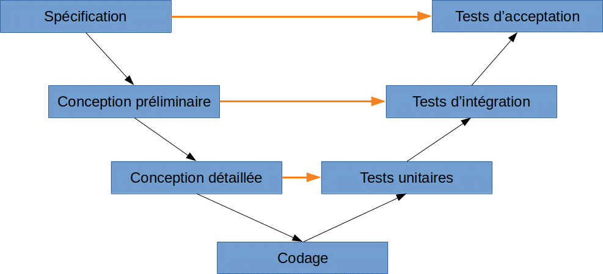
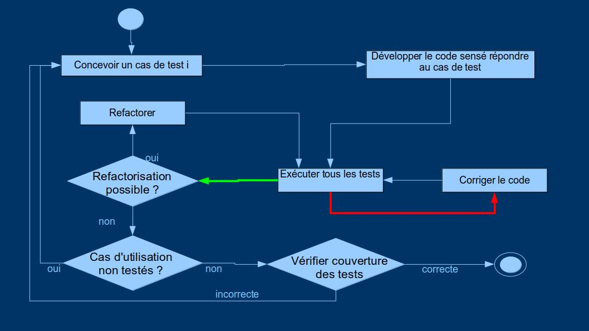

Tests unitaires en Python
I. Introduction
A. Définition préliminaire
Tester un programme signifie l'exécuter dans des situations données et vérifier que le résultat obtenu possède les propriétés attendues.
B. Que tester ?
Un programme peut être testé par rapport à différents critères. En voici une liste non exhaustive :
- Tests fonctionnels
- Tests des fonctionnalités implantées
- Tests en volume
- Tests de charge
- Tests utilisateur
- Tests de sécurité
- Tests de performance
- Tests de compatibilité
- Tests de documentation
Dans le cadre de ce cours, nous ne nous consacrerons qu'aux tests fonctionnels, c'est-à-dire ceux visant à établir la correction du résultat fourni par le programme.
C. Définitions
Cas de test
Un cas de test pour une fonctionnalité est défini au minimum par :
- une définition non ambiguë de la situation initiale
- une définition du résultat attendu.
Test
Un test est défini comme un ensemble de cas de tests.
D. Pourquoi et comment tester ?
Les bugs sont fréquents, et peuvent avoir des conséquences graves (voir https://mermet.users.greyc.fr/Enseignement/CoursPDF/testLogiciel.pdf).
Automatiser les tests permet de :
- lancer facilement les tests
- effectuer les tests très rapidement
- ne pas oublier des cas
La meilleure façon d'automatiser les tests est de les écrire dans le langage utilisé pour développer.
Il devient alors possible d'utiliser les tests pour :
- valider le développement
- assurer la non-régression au fur et à mesure de l'évolution du code
- apporter une garantie en cas de refactoring (modification de la structure du code en vue d'améliorer sa qualité sans changer sa fonctionnalité).
De tels tests font partie intégrante du code source de l'application, et son partagés quand le code source est partagé.
E. Interpréter les résultats d'un test
- Au moins 1 cas de test échoue : il y a une erreur (éventuellement dans le cas de test !)
- Tous les cas de test réussissent : l'application est correcte sur les cas de test écrits
F. Les différents niveaux de test
- Tests d'acceptation (tests systèmes ou tests d'acceptation utilisateur) : on vérifie chaque fonctionnalité, globalement
- Tests d'intégration : on vérifie l'interaction entre les différents modules
- Tests unitaires : on vérifier le fonctionnement de chaque méthode, chaque classe
G. Quand écrire les tests ? Quand les exécuter ?
1. Stratégie de test dans le modèle en V

Les test sont écrits relativement tôt, mais exécutés très tard : on détecte les erreurs tard, quand ça coûte plus cher.
2. Les tests comme spécification
On écrit tous les tests avant de développer
Problème : les tests écrits ne seront certainement pas compatibles avec la structure du code développé au final, et seront donc à réécrire.
3. Le TDD (Test Driven Development)
Dans le TDD, on itère sur un cyle "écrire un cas de test ⇆ développer le code y répondant". Cela oblige à un refactoring régulier, mais semble, au final, donner une bien meilleure garantie.

II. Méthodologie de construction des cas de test
a. Tests "boîte noire"
Dans les tests "boîte noire", on construit les cas de tests sans connaître la structure du code, mais en se fondant sur les caractéristiques du problème.
Exemples de méthodologie (voir https://mermet.users.greyc.fr/Enseignement/CoursPDF/testLogiciel.pdf) :
- partitionnement en classes d'équivalence
- partitionnement en classes d'équivalence étendues aux valeurs frontières
b. Tests "boîte blanche"
Dans les tests "boîte noire", on construit les tests en fonction du code développé ; on cherche à maximiser le "taux de couverture" des tests
Différents types de "couverture de code" :
- couverture des instructions : on cherche à passer par toutes les instructions au moins une fois
- couverture des décisions : on cherche à passer par toutes les branches au moins une fois
- couverture des conditions multiples : on cherche à passer par toutes les branches et, pour chaque branche, on souhaite y passer pour chacune des raisons possibles
Exemple : Soit le programme suivant :
c = 0 if a > 10 or b <100: c = 1 c = c + 1
Pour obtenir une couverture des instructions de 100%, un cas de test suffit :
entrée : (a = 12, b = 150) sortie : c = 2 → on passe par toutes les instruction puisqu'on rentre dans le "then"
Pour obtenir une couverture des décisions de 100%, 2 cas de test suffisent :
cas 1 : entrée : (a = 12, b = 150) sortie : c = 2 → la décision "a > 10 or b < 100" est vraie cas 2 : entrée : (a = 5, b = 150) sortie : c = 1 → la décision "a > 10 or b < 100" est fausse
Pour obtenir une couverture des conditions multiples, il faut 3 cas de test :
cas 1 : entrée : (a = 12, b = 150) sortie : c = 2 → on rentre dans le "then" car a > 10 est vrai cas 2 : entrée : (a = 5, b = 50) sortie : c = 2 → on rentre dans le "then" car b < 100 est vrai cas 3 : entrée : (a = 5, b = 150) sortie : c = 1 → on ne rentre pas dans le "then" car "a > 10 or b < 100" est faux
III. Les tests en Python
A. Introduction
Il existe 3 principaux frameworks de test en Python
- unittest : intégré à Python, les tests sont dans les modules à tester
- doctest : les tests sont intégrés aux documentations des méthodes
- pytest : les tests peuvent être spécifiés dans des modules séparés. C'est un programme externe qui est appelé pour effectuer les tests.
Dans ce cours, on présente pytest car :
- c'est le plus utilisé
- il est plus judicieux que les tests ne soient pas dans les mêmes fichiers que les fichiers de l'application, car cela allège la taille du code de l'application à distribuer aux clients.
- il est plutôt riche en fonctionnalité
B. Mise en œuvre avec pytest
On double chaque module d'un module de test.
Dans le module de test, toutes les méthodes de test doivent
avoir un nom commençant par test_.
On lance les tests en tapant en ligne de commande : pytest nomModuleTest.py.
Si on lance pytest sans argument, il exécute automatiquement tous les tests des fichiers préfixés par test_.
À titre d'exemple vous pouvez essayer avec le fichier calculatrice.py, qui donne les bases pour une calculatrice fonctionnant en notation polonaise inversée, et le module de test test_Calculatrice.py.
Pour vérifier qu'une méthode lève bien une exception, on peut utiliser
pytest.raises, comme dans le fichier test_Calculatrice2.py.
Lorsqu'on souhaite faire plusieurs tests d'une même méthode avec des paramètres différents, plutôt que d'écrire plusieurs méthodes de test, on peut utiliser les tests paramétrés, comme dans le fichier test_Calculatrice3.py.
Il est possible de faire ignorer à pytest des tests dans certains cas
en utilisant la fonction pytest.skip() ou les annotations
pytest.mark.skip / pytest.mark.skipif. Le
fichier test_Calculatrice4.py
montre une utilisation de pytest.skip() et une utilisation
de pytest.mark.skipif().
On peut aussi préciser que certains tests vont rater et que c'est
normal (test écrit alors que la fonction n'est pas encore implanté,
par exemple). Pour cela, il faudra utiliser l'annoation
pytest.mark.xfail(), ou la fonction
pytest.xfail().
pytest fournit de nombreuses autres fonctionnalités, que l'on peut trouver là : https://docs.pytest.org/en/latest/.
IV. Exercice
Exercice 1 : en reprenant l'exemple de la calculatrice :
a. envisagez l'ajout des opérations suivantes : produit, différence, élévation à la puissance et donnez le tableau des cas de tests que vous souhaitez développer.
b. Développez les cas de test correspondant avec pytest
c. Écrivez le code des opérations division, et factorielle
d. Développez les cas de test correspondant avec pytest
en essayant de maximiser la couverture de votre code